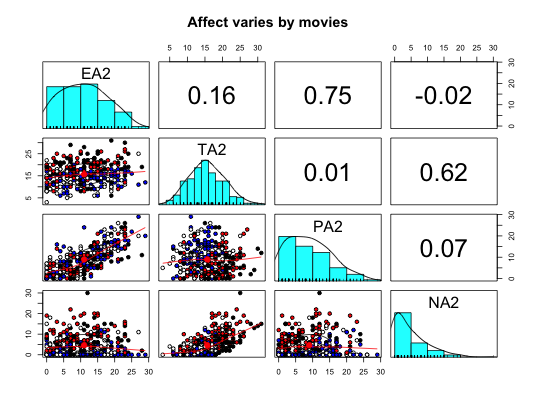

A recurring question in the study of affect is the proper dimensionality and the relationship to various personality dimensions. Here is a data set taken from two studies of mood and arousal using movies to induce affective states.
data(affect)
These are data from two studies conducted in the Personality, Motivation and Cognition Laboratory at Northwestern University. Both studies used a similar methodology:
Collection of pretest data using 5 scales from the Eysenck Personality Inventory and items taken from the Motivational State Questionnaire (see msq. In addition, state and trait anxiety measures were given. In the ``maps" study, the Beck Depression Inventory was given also.
Then subjects were randomly assigned to one of four movie conditions: 1: Frontline. A documentary about the liberation of the Bergen-Belsen concentration camp. 2: Halloween. A horror film. 3: National Geographic, a nature film about the Serengeti plain. 4: Parenthood. A comedy. Each film clip was shown for 9 minutes. Following this the MSQ was given again.
Data from the MSQ were scored for Energetic and Tense Arousal (EA and TA) as well as Positive and Negative Affect (PA and NA).
Study flat had 170 participants, study maps had 160.
These studies are described in more detail in various publications from the PMC lab. In particular, Revelle and Anderson, 1997 and Rafaeli and Revelle (2006). An analysis of these data has also appeared in Smillie et al. (2012).
Data collected at the Personality, Motivation, and Cognition Laboratory, Northwestern University.
Revelle, William and Anderson, Kristen Joan (1997) Personality, motivation and cognitive performance: Final report to the Army Research Institute on contract MDA 903-93-K-0008
Rafaeli, Eshkol and Revelle, William (2006), A premature consensus: Are happiness and sadness truly opposite affects? Motivation and Emotion, 30, 1, 1-12.
Smillie, Luke D. and Cooper, Andrew and Wilt, Joshua and Revelle, William (2012) Do Extraverts Get More Bang for the Buck? Refining the Affective-Reactivity Hypothesis of Extraversion. Journal of Personality and Social Psychology, 103 (2), 206-326.
#> #> Descriptive statistics by group #> group: 1 #> vars n mean sd median trimmed mad min max range skew kurtosis #> Film 1 83 1.00 0.00 1.0 1.00 0.00 1 1 0 NaN NaN #> ext 2 83 13.40 4.35 13.0 13.43 4.45 2 22 20 -0.06 -0.58 #> neur 3 83 10.21 4.90 11.0 10.17 5.93 1 22 21 0.06 -0.76 #> imp 4 83 4.34 1.97 4.0 4.30 1.48 0 9 9 0.10 -0.54 #> soc 5 83 7.64 2.77 8.0 7.78 2.97 0 13 13 -0.42 -0.53 #> lie 6 83 2.36 1.50 2.0 2.30 1.48 0 7 7 0.42 -0.14 #> traitanx 7 83 39.91 9.60 39.0 39.55 10.38 23 61 38 0.31 -0.81 #> state1 8 83 39.81 10.75 38.0 39.22 10.38 20 69 49 0.56 -0.17 #> EA1 9 83 9.27 7.21 8.0 8.70 7.41 0 29 29 0.59 -0.48 #> TA1 10 83 12.49 4.80 12.9 12.35 4.30 0 26 26 0.37 0.74 #> PA1 11 83 9.46 7.28 7.5 8.77 5.19 0 29 29 0.80 -0.14 #> NA1 12 83 3.50 3.73 2.0 2.94 2.97 0 17 17 1.41 1.90 #> EA2 13 83 10.02 6.09 9.0 9.72 7.41 0 23 23 0.30 -0.60 #> TA2 14 83 17.48 4.74 18.0 17.55 4.45 8 27 19 -0.20 -0.77 #> PA2 15 83 7.27 5.93 6.0 6.63 5.93 0 23 23 0.78 -0.25 #> NA2 16 83 8.67 5.35 8.0 8.21 5.93 0 22 22 0.60 -0.43 #> state2 17 41 48.66 11.00 49.0 49.21 10.38 20 71 51 -0.45 0.01 #> MEQ 18 41 38.39 11.49 40.0 38.00 13.34 16 65 49 0.26 -0.40 #> BDI 19 42 10.69 6.73 11.0 10.59 7.41 0 23 23 0.05 -1.25 #> se #> Film 0.00 #> ext 0.48 #> neur 0.54 #> imp 0.22 #> soc 0.30 #> lie 0.16 #> traitanx 1.05 #> state1 1.18 #> EA1 0.79 #> TA1 0.53 #> PA1 0.80 #> NA1 0.41 #> EA2 0.67 #> TA2 0.52 #> PA2 0.65 #> NA2 0.59 #> state2 1.72 #> MEQ 1.79 #> BDI 1.04 #> ------------------------------------------------------------ #> group: 2 #> vars n mean sd median trimmed mad min max range skew kurtosis #> Film 1 78 2.00 0.00 2.0 2.00 0.00 2 2 0 NaN NaN #> ext 2 78 12.38 4.55 12.0 12.47 2.97 1 21 20 -0.21 -0.37 #> neur 3 78 9.88 4.61 10.0 9.80 4.45 0 21 21 0.17 -0.35 #> imp 4 78 3.88 2.05 4.0 3.86 1.48 0 8 8 0.15 -0.78 #> soc 5 78 7.15 2.71 7.5 7.31 2.22 1 12 11 -0.49 -0.42 #> lie 6 78 2.15 1.47 2.0 2.02 1.48 0 7 7 0.97 1.12 #> traitanx 7 78 39.87 10.14 38.0 39.33 10.38 22 71 49 0.69 0.46 #> state1 8 78 41.44 10.41 41.0 41.03 10.38 22 79 57 0.67 1.15 #> EA1 9 78 8.40 6.54 7.5 7.97 8.15 0 26 26 0.45 -0.65 #> TA1 10 78 12.62 3.84 13.0 12.51 2.97 5 25 20 0.45 0.65 #> PA1 11 78 7.48 5.89 7.0 6.95 5.93 0 22 22 0.68 -0.31 #> NA1 12 78 3.36 4.45 2.0 2.57 2.97 0 28 28 2.73 10.66 #> EA2 13 78 11.65 6.66 11.0 11.51 5.93 0 28 28 0.17 -0.62 #> TA2 14 78 18.33 5.15 19.0 18.34 4.45 6 31 25 -0.01 -0.15 #> PA2 15 78 8.08 6.18 7.0 7.56 7.41 0 26 26 0.74 0.15 #> NA2 16 78 5.37 5.18 4.0 4.66 4.45 0 30 30 1.80 5.06 #> state2 17 41 46.55 9.63 46.0 46.63 8.90 25 67 42 -0.01 -0.21 #> MEQ 18 41 39.63 10.04 39.0 39.58 10.38 16 58 42 -0.01 -0.76 #> BDI 19 37 10.65 7.19 11.0 10.48 8.90 0 26 26 0.11 -1.05 #> se #> Film 0.00 #> ext 0.52 #> neur 0.52 #> imp 0.23 #> soc 0.31 #> lie 0.17 #> traitanx 1.15 #> state1 1.18 #> EA1 0.74 #> TA1 0.44 #> PA1 0.67 #> NA1 0.50 #> EA2 0.75 #> TA2 0.58 #> PA2 0.70 #> NA2 0.59 #> state2 1.50 #> MEQ 1.57 #> BDI 1.18 #> ------------------------------------------------------------ #> group: 3 #> vars n mean sd median trimmed mad min max range skew kurtosis #> Film 1 85 3.00 0.00 3.0 3.00 0.00 3 3.0 0.0 NaN NaN #> ext 2 85 12.78 4.60 13.0 13.12 4.45 1 20.0 19.0 -0.64 -0.12 #> neur 3 85 10.61 5.14 10.0 10.30 4.45 0 23.0 23.0 0.46 -0.20 #> imp 4 85 4.12 1.98 4.0 4.07 1.48 0 8.0 8.0 0.23 -0.87 #> soc 5 85 7.31 3.15 8.0 7.60 2.97 0 12.0 12.0 -0.75 -0.16 #> lie 6 85 2.34 1.41 2.0 2.28 1.48 0 6.0 6.0 0.42 -0.35 #> traitanx 7 85 39.42 9.62 39.0 38.70 7.41 23 71.0 48.0 0.74 0.51 #> state1 8 85 40.72 11.25 40.0 39.89 10.38 22 76.0 54.0 0.67 0.33 #> EA1 9 85 9.42 7.24 8.0 8.87 8.90 0 29.0 29.0 0.55 -0.59 #> TA1 10 85 13.16 4.60 13.0 13.00 4.45 3 24.5 21.5 0.25 -0.19 #> PA1 11 85 8.95 6.91 8.0 8.29 5.93 0 28.0 28.0 0.77 0.00 #> NA1 12 85 3.92 4.66 2.0 3.12 2.97 0 23.0 23.0 1.93 4.61 #> EA2 13 85 9.07 6.90 7.0 8.66 8.90 0 27.0 27.0 0.46 -0.87 #> TA2 14 85 13.30 4.26 14.0 13.20 4.45 3 25.0 22.0 0.20 -0.08 #> PA2 15 85 8.75 6.45 8.0 8.23 7.41 0 26.0 26.0 0.57 -0.42 #> NA2 16 85 2.89 4.13 1.0 2.01 1.48 0 18.0 18.0 1.77 2.44 #> state2 17 42 39.58 9.24 40.0 39.89 9.64 20 57.0 37.0 -0.20 -0.83 #> MEQ 18 42 38.64 10.20 38.5 38.82 8.15 15 59.0 44.0 -0.20 -0.27 #> BDI 19 43 10.81 7.99 9.0 10.37 10.38 0 29.0 29.0 0.40 -0.93 #> se #> Film 0.00 #> ext 0.50 #> neur 0.56 #> imp 0.22 #> soc 0.34 #> lie 0.15 #> traitanx 1.04 #> state1 1.22 #> EA1 0.78 #> TA1 0.50 #> PA1 0.75 #> NA1 0.50 #> EA2 0.75 #> TA2 0.46 #> PA2 0.70 #> NA2 0.45 #> state2 1.43 #> MEQ 1.57 #> BDI 1.22 #> ------------------------------------------------------------ #> group: 4 #> vars n mean sd median trimmed mad min max range skew kurtosis #> Film 1 84 4.00 0.00 4.0 4.00 0.00 4 4 0 NaN NaN #> ext 2 84 14.01 4.27 14.5 14.28 3.71 0 22 22 -0.64 0.28 #> neur 3 84 10.13 5.51 10.0 10.11 5.93 0 23 23 0.04 -0.81 #> imp 4 84 4.81 1.81 5.0 4.93 1.48 0 8 8 -0.54 0.01 #> soc 5 84 7.91 2.78 9.0 8.17 2.97 0 13 13 -0.77 0.11 #> lie 6 84 2.31 1.57 2.0 2.19 1.48 0 7 7 0.86 0.67 #> traitanx 7 84 38.89 9.87 37.0 38.07 10.38 23 68 45 0.74 0.20 #> state1 8 84 41.39 10.71 40.0 40.99 11.12 21 66 45 0.38 -0.73 #> EA1 9 84 9.62 7.47 8.0 9.22 8.90 0 26 26 0.38 -1.14 #> TA1 10 84 13.35 4.37 13.0 13.21 4.45 4 24 20 0.38 -0.07 #> PA1 11 84 9.56 6.88 9.0 9.15 8.15 0 27 27 0.36 -0.70 #> NA1 12 84 3.96 4.40 2.0 3.18 2.97 0 18 18 1.45 1.60 #> EA2 13 84 13.35 7.02 14.0 13.46 7.41 0 29 29 -0.13 -0.81 #> TA2 14 84 13.74 3.14 14.0 13.89 2.97 6 20 14 -0.45 -0.28 #> PA2 15 84 11.75 6.31 12.0 11.65 5.93 0 29 29 0.11 -0.38 #> NA2 16 84 1.79 2.88 0.0 1.16 0.00 0 12 12 1.81 2.54 #> state2 17 46 35.89 8.05 36.0 35.71 7.41 20 54 34 0.22 -0.67 #> MEQ 18 46 40.63 9.59 41.5 40.97 9.64 20 59 39 -0.32 -0.53 #> BDI 19 38 10.55 7.25 10.0 10.28 8.90 0 26 26 0.33 -0.98 #> se #> Film 0.00 #> ext 0.47 #> neur 0.60 #> imp 0.20 #> soc 0.30 #> lie 0.17 #> traitanx 1.08 #> state1 1.17 #> EA1 0.81 #> TA1 0.48 #> PA1 0.75 #> NA1 0.48 #> EA2 0.77 #> TA2 0.34 #> PA2 0.69 #> NA2 0.31 #> state2 1.19 #> MEQ 1.41 #> BDI 1.18pairs.panels(affect[14:17],bg=c("red","black","white","blue")[affect$Film],pch=21, main="Affect varies by movies ")errorCircles("EA2","TA2",data=affect,group="Film",labels=c("Sad","Fear","Neutral","Humor") , main="Enegetic and Tense Arousal by Movie condition")#> Warning: the standard deviation is zero#> Warning: NaNs produced#> Warning: the standard deviation is zeroerrorCircles(x="PA2",y="NA2",data=affect,group="Film",labels=c("Sad","Fear","Neutral"," Humor"), main="Positive and Negative Affect by Movie condition")#> Warning: the standard deviation is zero#> Warning: NaNs produced#> Warning: the standard deviation is zero